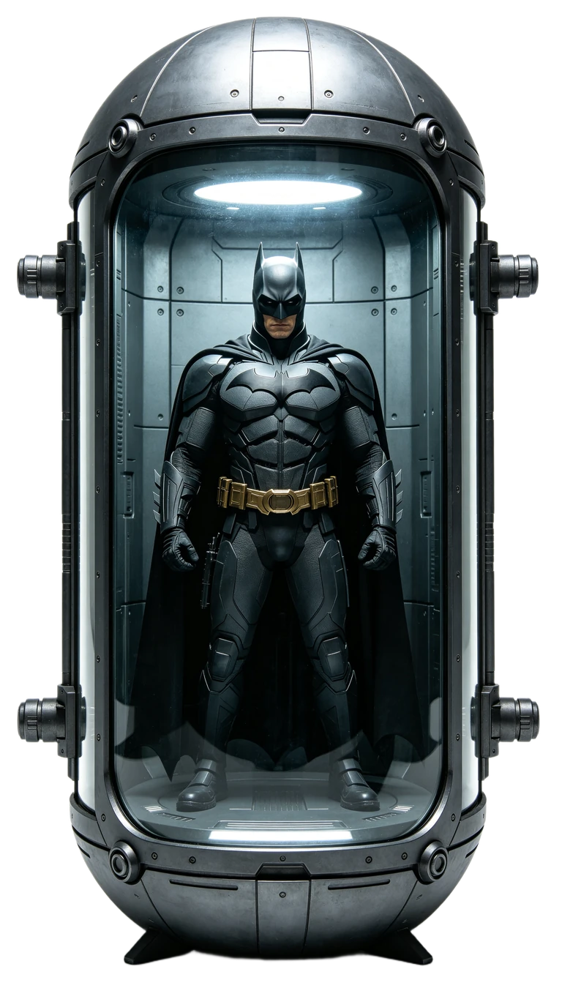
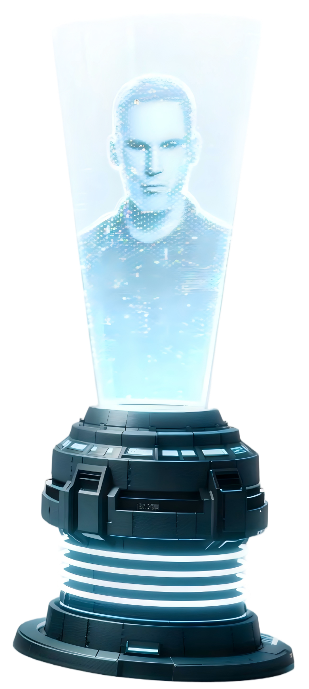
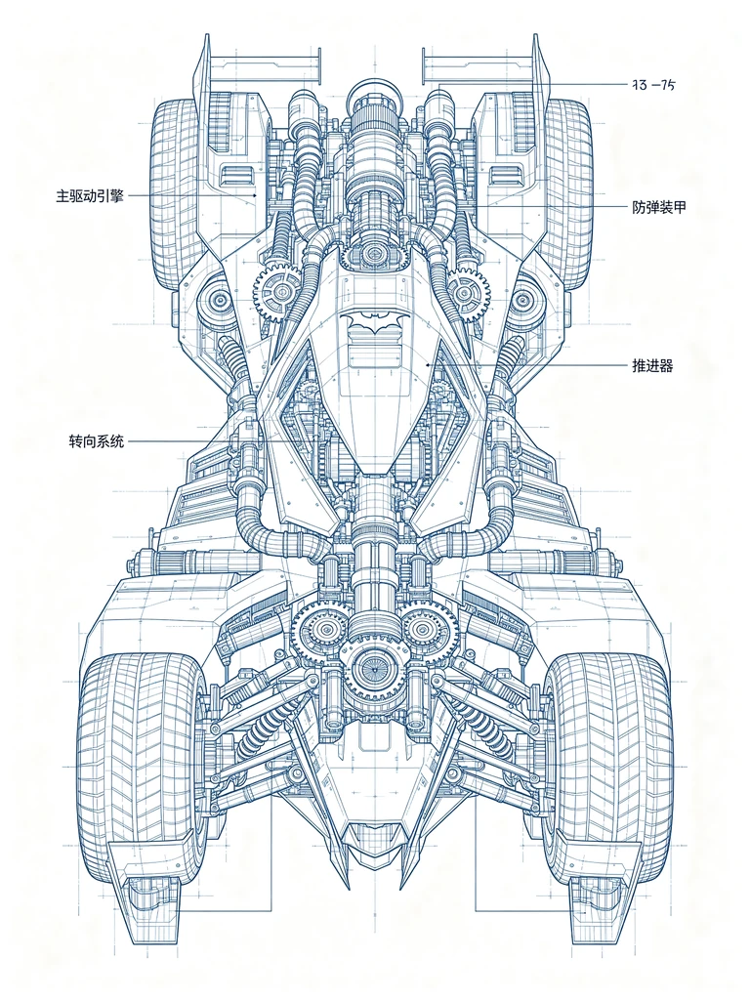
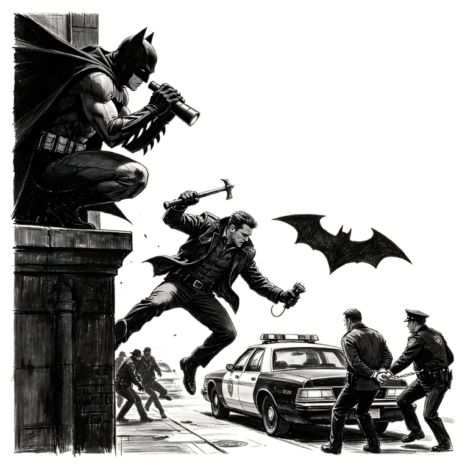
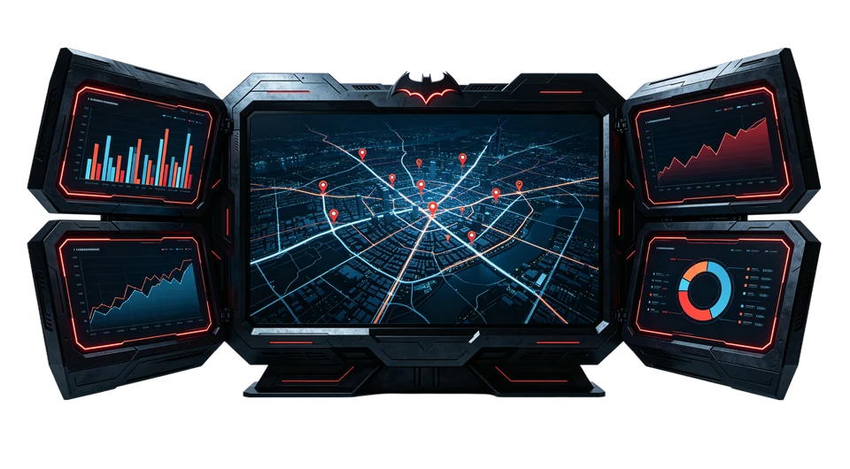
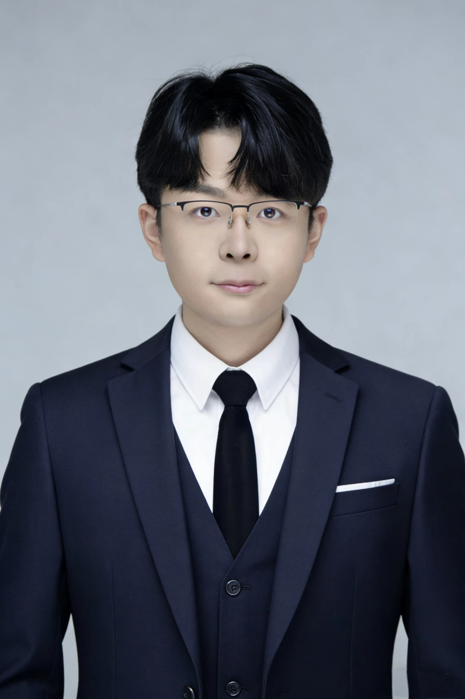

高传志｜让需求成为可执行的 SOP

基本信息
人才画像
需求解构
运营体系
数据决策基本信息
7 年工作经验，组织发展方向。以人力运营为业务原点，持续将 AI、自动化与数据分析带入实际协作现场。
- 01复合能力
覆盖场景识别、需求拆解、原型开发、本地模型部署与推广培训，能将人力业务需求转化为数字化方案与工具。
- 02工具与技术
熟练使用 Codex、Cursor、Python、Power Automate 等工具，具备数据清洗、分析、可视化和自动化处理经验。


- 03沟通与表达
具备英文资料阅读与工作沟通能力；同时具备 Figma、视觉设计与内容策划能力，能提高方案交付的可读性。

人才画像
不是只做工具，也不是只做流程。核心价值在于理解人力场景，并把“可做的事”变成“可持续跑的机制”。
- 01业务翻译者
能将业务方的模糊描述翻译成目标、对象、规则、节点与交付物，减少协作中的信息损耗。
- 02流程设计者
具备干部选任、人才盘点、梯队建设、监督检查及初创公司人事管理经验，理解组织运行的真实约束。
- 03数字化实践者
从本地模型部署到 HTML 交互式报告，从数据同步平台到自动化小程序，重视可用、可维护与可复用。
集团 AI+HR 创新与数字化落地、人力经营分析、初创公司人事体系从 0 到 1 搭建。
干部管理、组织人才体系、人力数字化与本地模型能力内化。
团队协作、项目推进、人事支持及内容运营经验。
点击logo可跳转公司官网
需求解构
任何“想做点什么”的问题，先被转换为一个清晰的作业系统：谁在什么条件下，完成什么动作，产生什么可验证的结果。
- CASEAI 人岗匹配与批量分析
围绕人岗匹配、人力分析及管理汇报等场景，完成需求拆解、方案设计、流程搭建与成果交付；将分析结果转为可交互的报告工作流。
- CASE总部 - 子公司协作数据库
独立搭建内网干部管理协作数据库，形成“一人一册”监察档案；配套小程序与日常数据反馈，提高协同效率。
从经营事实推导关键岗位能力
解析经营报告与公开信息，提炼增长、风险与战略命题，建立“战略 - 组织 - 干部能力”的统一坐标。
运营体系
运营体系的价值不在于流程图本身，而在于让多人协作、重复作业、例外处理和管理反馈，都有稳定而清楚的处理方式。
- 01从 0 到 1 搭建基础人力运营
承担新成立公司筹建期的人力资源全盘管理，统筹招聘配置、薪酬福利、员工关系和制度建设，保障组织起步阶段的稳定运行。
- 02建立专业化闭环 SOP
围绕集团人力经营事项建立跟踪机制，形成“数据发现 - 业务验证 - 管理改进 - 结果复盘”的专业化闭环。
- 03将能力扩散到组织
开发并组织 AI 培训，围绕工具与人力业务场景设计实操内容，帮助团队从“会用工具”走向“会解决问题”。
数据决策
让数据不止“汇总”，而是进入判断：统一口径、找到差异、解释原因、形成动作，并在下一轮结果中验证有效性。
- 01治理多口径数据
完成集团干部员工、人力投产、绩效考核等专题数据治理，建立自动同步机制；支持人员结构、配置与干部梯队建设等管理判断。
- 02呈现管理者可用的洞察
开展人力经营分析与决策支持，把复杂数据组织为面向管理层的报告、看板和行动建议。
- 03自动化与可视化
使用 Python、Power Automate 等进行数据处理与流程自动化，以交互式页面和报告让结论更容易被理解与使用。
感谢您阅读这份交互式简历。
如我的经历与贵单位的岗位需求契合，欢迎扫描二维码添加微信，进一步交流岗位匹配与职业发展方向。
添加时请备注公司名称及岗位，谢谢！